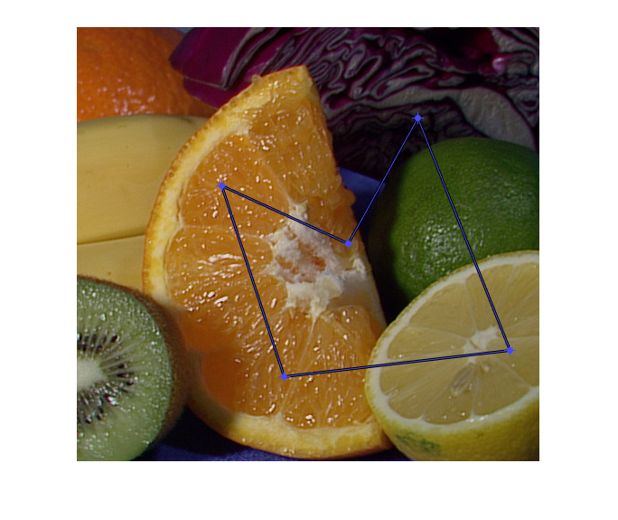
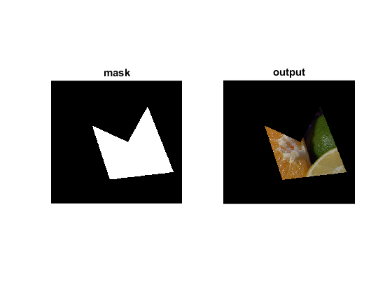

Interactive Mask demo
Interactively create a polygon mask.
This demo uses Image Processing Toolbox functions.
See also: impoly, getline, roipoly
Sources:
% load an image, and display it src = imread(fullfile(mexopencv.root(),'test','fruits.jpg')); imshow(src); % interactively create a polygon hax = imgca; h = impoly(hax, 'Closed',true); api = iptgetapi(h); fcn = makeConstrainToRectFcn('impoly', get(hax,'XLim'), get(hax,'YLim')); api.setPositionConstraintFcn(fcn); % get 2D points pts = wait(h); display(pts) % create binary mask mask = createMask(h); % apply mask on image out = bsxfun(@times, src, cast(mask,'like',src)); % show result figure subplot(121), imshow(mask), title('mask') subplot(122), imshow(out), title('output')
pts = 161.0000 176.0000 230.0000 387.0000 480.0000 358.0000 378.0000 101.0000 301.0000 240.0000